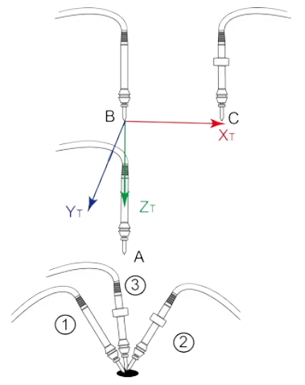
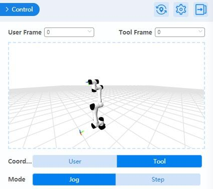

Tool Coordinate System
When an end effector such as welding gun or gripper is mounted on the robot, a tool coordinate system is required for programming and operation. For example, when using multiple grippers to carry multiple workpieces simultaneously, you can set a tool coordinate system for each gripper to improve efficiency and ease of programming.
DobotStudio Pro supports up to ten tool coordinate systems. Tool coordinate system 0 is the base coordinate system which is located at the robot flange and cannot be changed.
Note
When creating a tool coordinate system, make sure that the reference coordinate system is the base coordinate system.
The tool coordinate system of a six-axis robot is created by a six-point calibration method. After mounting the end effector, adjust the direction of the end effector to make the Tool Center Point (TCP) align with the same reference point in three different directions to obtain the position offset of the end effector. Then jog the robot to three other points (A, B, C) to obtain the angle offset.
Creating a Tool Coordinate System
- Mount an end effector on the robot.
- Click Add.
- Select Six points setting in “Add Tool Frame: index2” page.
Note
- When creating a tool coordinate system, make sure that the reference coordinate system is the base coordinate system 0.
- Long pressing Run To can move the robot to the set points.
- Jog the robot to the reference point in the first direction, then click obtain on the P1 panel.
- Jog the robot to the reference point in the second direction, then click obtain on the P2 panel.
- Jog the robot to the reference point in the third direction, then click obtain on the P3 panel.
- Jog the robot to the reference point in the vertical direction, then click obtain on the P4 panel.
- Jog Z-axis along the positive direction to move the robot to another point, then click obtain on the P5 panel.
- Jog X-axis along the positive direction to move the robot to point P6 (not in the same line with P4 and P5). Click obtain on the P6 panel.
- Click OK. The tool coordinate system is created successfully.
After adding or modifying a tool coordinate system, you can select a tool coordinate system in the control panel and jog the robot arm.
Note
When creating or modifying a Tool coordinate system, you can also select Input settings or Three points setting in Step 3.
Other operations
Modify a coordinate system
Select a coordinate system and click Modify. The procedure to modify an existing coordinate system is the same as adding a new coordinate system.
Copy a coordinate system
Create a new coordinate system based another by selecting a coordinate system and clicking copy. This new system will be the same as the copied one.